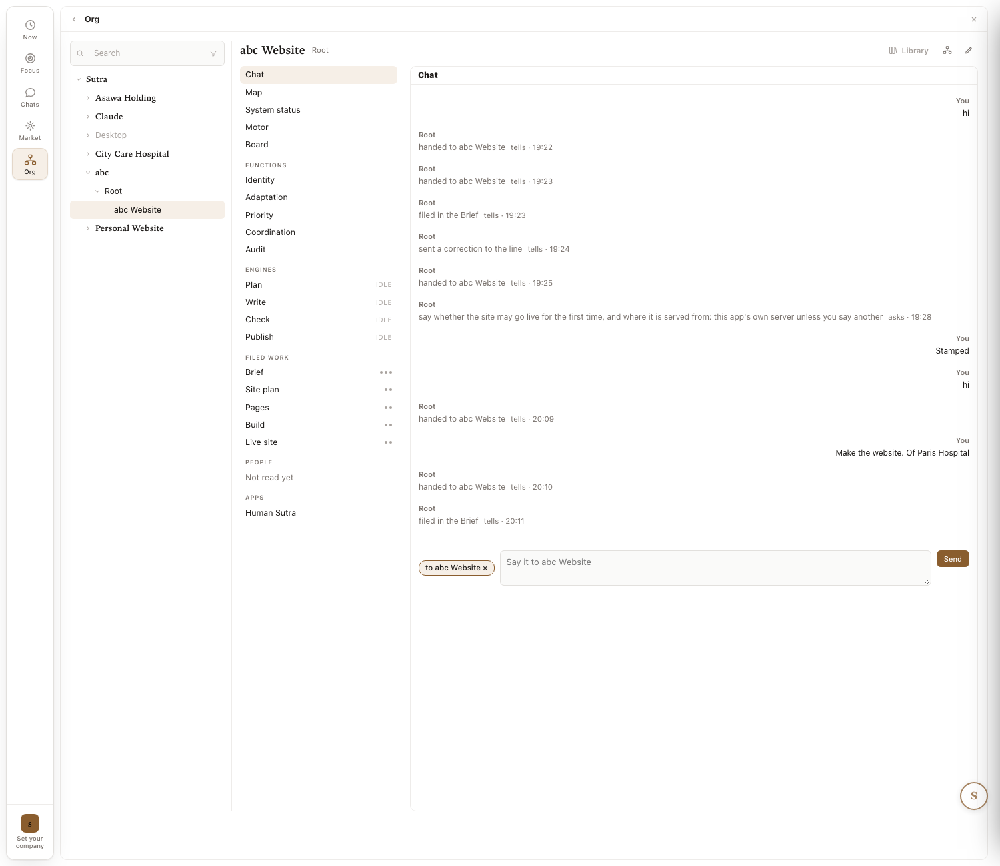
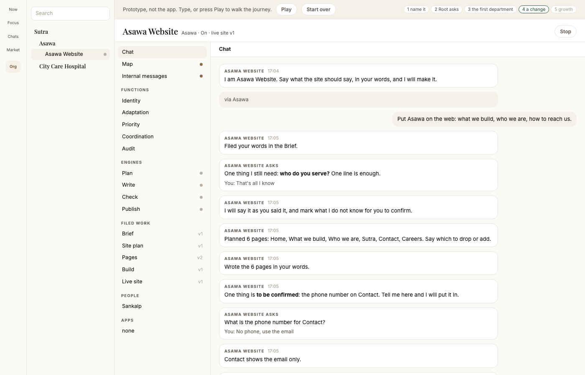
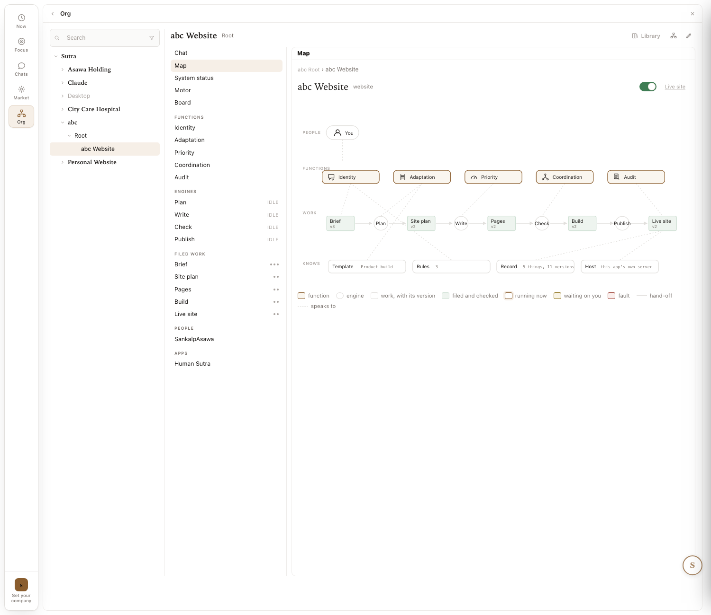
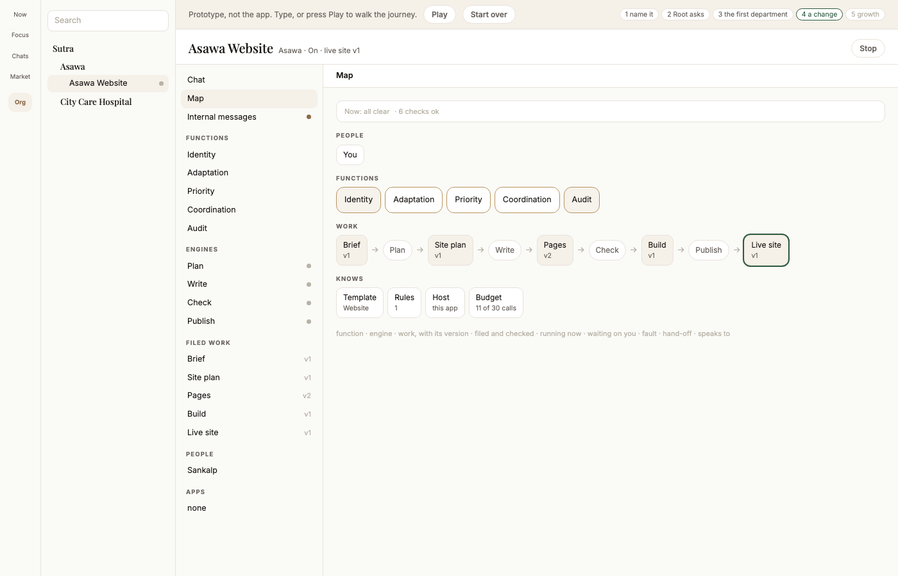
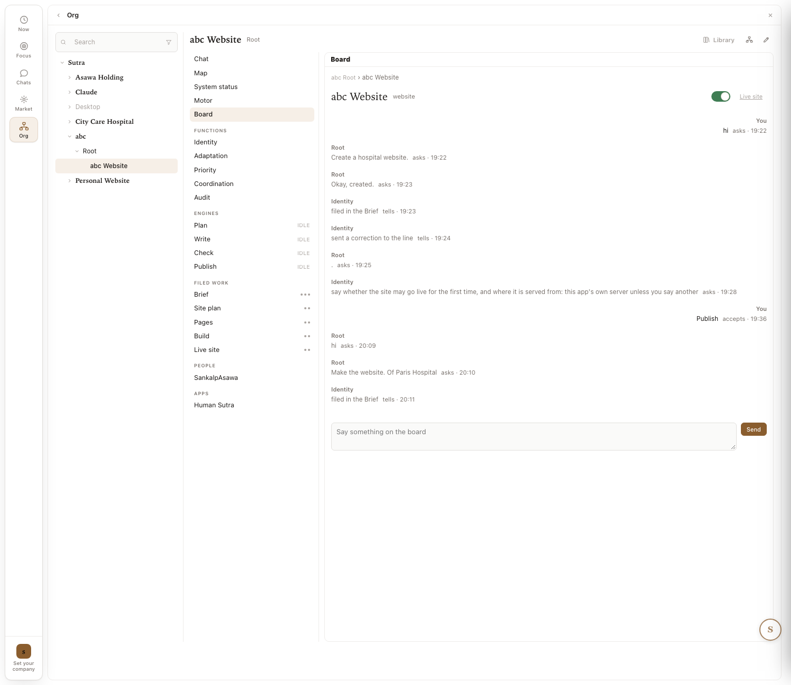
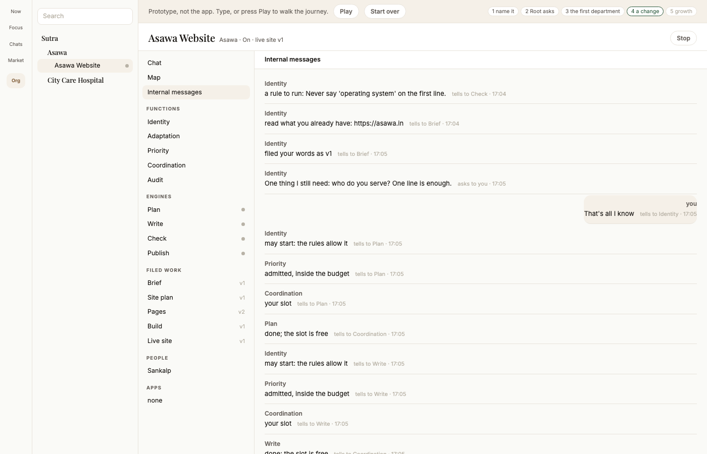
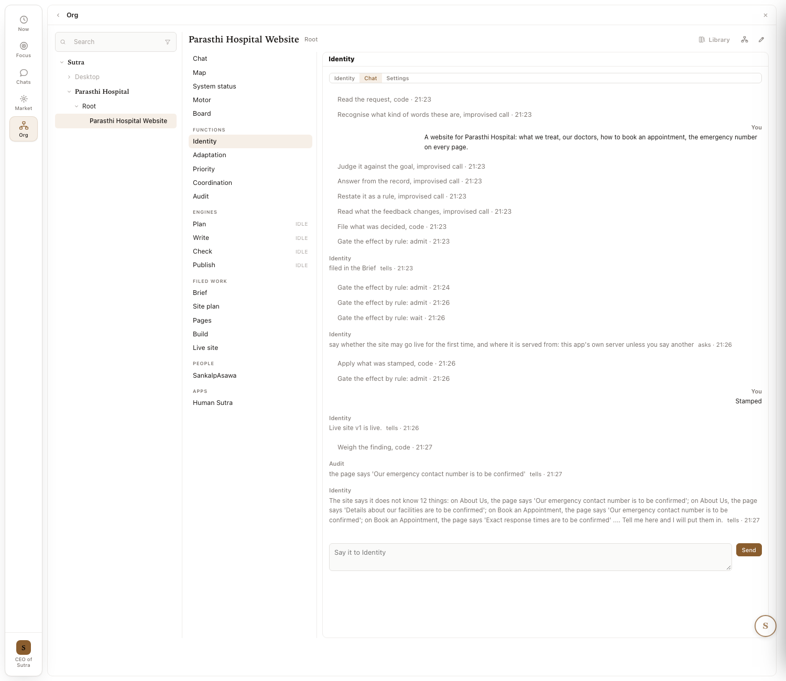
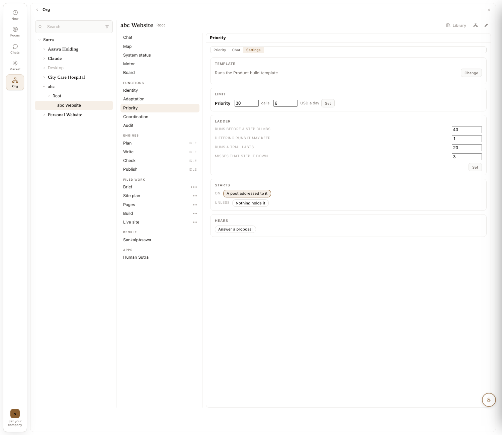
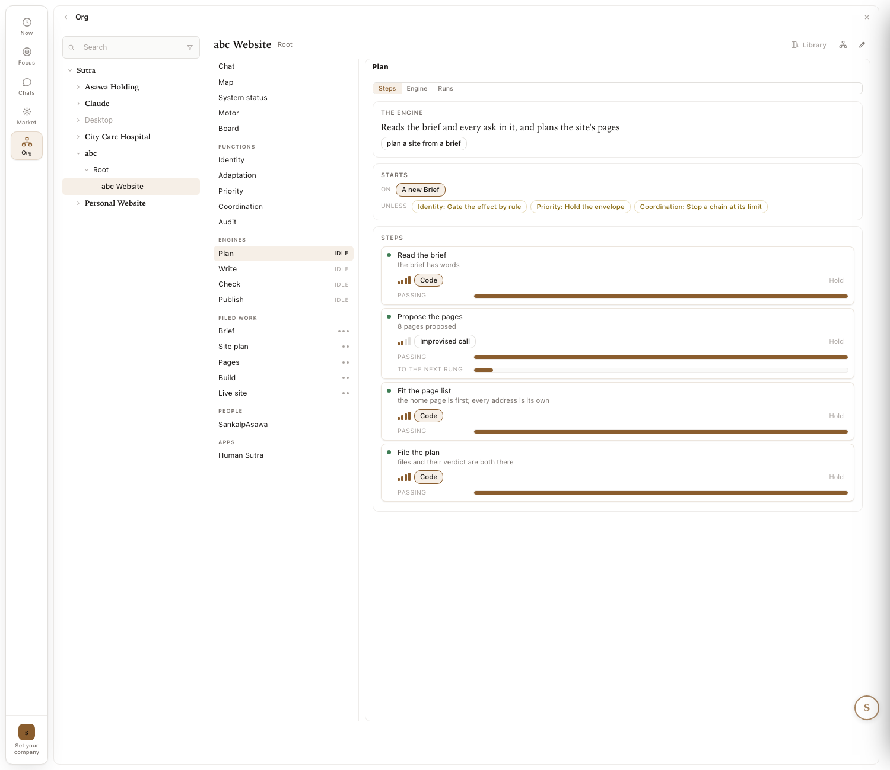
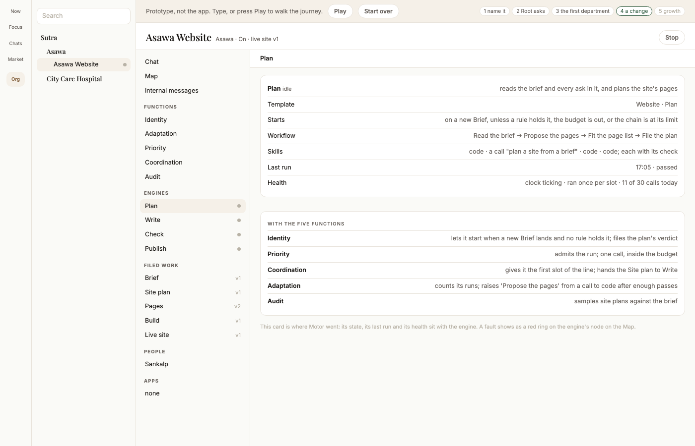

Five sections, the captures at full width so they can be read. Marks 1 to 3 are the founder's of 2026-09-29, applied to the prototype; 4 and 5 wait for his marks. Under each pair, the table of what changed with a column for your mark. The three-column pages stay as the short form.
1 Chat · 2 Map · 3 Team · 4 Functions · 5 Engines and their interactions

"Root handed to abc Website" four times; the department's words signed Root; the ask a plain line; a chip on the box.

The department speaks in its own name with a time; one quiet "via Asawa"; asks as cards with the answer kept under them; rules as chips under the box.
| # | Element | Now | New | Why | Your mark |
|---|---|---|---|---|---|
| 1.1 | relay lines | four "handed to" lines | CUT once answered; one "via Asawa" stays | the plumbing is not the conversation | keep |
| 1.2 | who speaks | Root | RENAME the department's name, with a time | you should see who is speaking | keep |
| 1.3 | the ask | a plain line | CARD with its two buttons, the answer kept under it | the one thing that needs you stands out | keep |
| 1.4 | the chip on the box | "to abc Website x" | CUT inside the department | inside the department it is implied | keep |
| 1.5 | rules | only as a relay line | CHIPS under the box | you see the rules it keeps | keep |
| 1.6 | the working line, Stop, the live line with Open | as today | KEEP | they work | keep |

The topology as designed, released as 2.306.8; a nine-item legend; no NOW line; a fault shows as a red pill.

The same topology, untouched; the NOW line above it; Budget in Knows; no legend.
| # | Element | Now | New | Why | Your mark |
|---|---|---|---|---|---|
| 2.1 | the topology | as designed | KEEP, closed | your word: Map is closed | keep: the Map as today |
| 2.2 | the NOW line | none | ADD above the map: counts only when non-zero, and the checks | yesterday's rows 4 and 8; System status folds here | keep (today's decision); say drop to remove |
| 2.3 | the legend | nine items | CUT | colour carries it; a hover names a shape | drop: the legend stays |
| 2.4 | Knows | Template, Rules, Host | ADD Budget | the one number Motor showed that an owner wants | drop: as today |

The owner's conversation a second time; an empty turn "Root . asks" (a bug, flagged); a Say box at the bottom.

What the functions say to each other, one bubble each, a colour per function; your answers as your bubbles on the right; read only.
| # | Element | Now | New | Why | Your mark |
|---|---|---|---|---|---|
| 3.1 | what it holds | the owner's conversation again | REPLACE with the functions' messages to each other | your word; the chat already holds the conversation | keep |
| 3.2 | the layout | a chat with a Say box | CHAT LAYOUT, read only, no box | your word: a chat kind of layout, no edit | change: the Board's format, read only, no box |
| 3.3 | who is who | Root, Identity | COLOUR per function, "from, to whom" on each bubble | five voices need telling apart | drop: no colours |
| 3.4 | the empty turn | "Root . asks", FAILED | FIX in the app (a SIM row), not a design change | an empty post reached the record | fix in the app |

Identity's Chat tab: a step row after every turn; eight of them between two answers.

Priority's Settings tab: template, limit, the ladder, starts, hears.
Click a function on the left of the prototype. The card: what it is for; what it keeps (the template's floor, in fewer words); what it decides (the template's choices); what it does with the engines; what it did last. Under it, Settings with only what a person sets: the template, and for Priority the budget. The ladder's four numbers move behind Details.
| # | Function | Today's three tabs hold | Keep on the card | Fold behind Details | Your mark |
|---|---|---|---|---|---|
| 4.1 | Identity | steps on rungs (Hear the owner, Take a request, Give a verdict, Take a stamp, Take a refusal, Hear a finding, Hear an alarm...); its chat with step rows; template, ladder, starts, hears | for: hears you, judges against the goal, keeps the rules, gives verdicts; keeps: the goal, the done line, your rules, every change is an ask; decides: what to raise to you; last did | the engines' steps and rungs; the step rows in its chat; the ladder | keep / change / drop |
| 4.2 | Adaptation | its engines (Hear an idea, Start or drop a trial, Priority priced an engine); chat; ladder | for: watches what repeats and fails, moves steps on the ladder, proposes engines and departments; keeps: proposes, never applies; decides: which idea becomes an engine | the ladder's four numbers (shown as one line); the trial rows | |
| 4.3 | Priority | its engine (Answer a proposal); chat; template, limit, ladder | for: orders the queue, holds the budget; keeps: admits each row, the next shippable slice first; decides: the order; Settings: the budget (calls, USD a day) | the ladder; the queue's rows | |
| 4.4 | Coordination | its engines (Hear a verdict, Hear a refusal, the tie); chat; ladder | for: timetable, slots, locks, hand-offs; keeps: one run at a time, a chain stops at 12; decides: who goes first among equals | the timetable rows; the lock rows | |
| 4.5 | Audit | its engine (Pick, Check, Judge, File); chat; ladder | for: reads the work against the brief; keeps: samples, files a finding Identity weighs, never touches an engine; decides: what to sample | the sample rows | |
| 4.6 | every function's Chat tab | a step row after every turn | the turns | the step rows, folded to one line per turn, opened on click (SIM-3 c) | |
| 4.7 | every function's first tab | the engines' steps on rungs with Hold and PASSING bars | nothing; it is the builder's view | the whole tab, reachable as Details |

Tabs Steps, Engine, Runs; the starts-on and unless chips; four step cards with rung bars, "Code" or "Improvised call", "Hold", a PASSING bar, "To the next rung".

One card: what it does, template, starts, workflow, skills, last run, health; below it, what each of the five functions does for and with this engine.
| Engine | Identity | Priority | Coordination | Adaptation | Audit |
|---|---|---|---|---|---|
| Plan on a new Brief | lets it start when a new Brief lands and no rule holds it; files the plan's verdict | admits the run; one call, inside the budget | the first slot of the line; hands the Site plan to Write | counts its runs; raises "Propose the pages" from a call to code after enough passes | samples site plans against the brief |
| Write on a new Site plan | lets it start; your rules about words apply to every page | one call per page; waits if the budget is out | waits for Plan's slot to free; hands the Pages to Check | raises "Write a page" to code where pages repeat; lowers it on misses | samples pages against the brief |
| Check on new Pages | gives it the rules to run; a broken rule goes back to Write twice, then to you | admits the run; a call per rule | hands the Build to Publish; stops the chain at its limit | counts sends-back per rule; a rule that never breaks moves to code | reads what Check found; files what Check missed |
| Publish on a new Build | holds the first publish until you stamp; after that, by rule | admits the run; no calls | the last slot; the Live site closes the chain | counts publishes; nothing to raise, it is code | reads the live site against the brief after each publish |
| # | Element | Now | New | Why | Your mark |
|---|---|---|---|---|---|
| 5.1 | the engine screen | three tabs, step cards with rung bars | ONE CARD: does, template, starts, workflow, skills, last run, health | the owner's questions, in order | keep / change / drop |
| 5.2 | the rungs, Hold, "to the next rung" | on every step card | CUT from the card; behind Details | the builder's view, not the owner's | |
| 5.3 | the functions around the engine | chips "unless Identity: gate..., Priority: hold..., Coordination: stop..." | A LIST: what each of the five does for and with this engine | your ask: the interactions in one place | |
| 5.4 | IDLE beside each engine | a word | A DOT: grey idle, green running | fewer words |
Provenance · author: claude (2026-09-29) · the same captures and rows as screens-before-now-new.html, at full width · confidence: high on Now and New (captures).